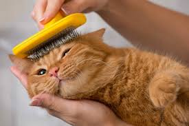

COMO TER UM BOM CUIDADO COM SEU GATINHO?
Uns dos bons cuidados é:
-Levar ao veterinário
-Castre seu gato
-Dar água e comidas em um pote higienizado
-Brinque com o seu gato
-Escove seu gato regularmente
-Aprecie seu comportamento
O QUE NÃO PODE FAZER COM O GATO?
Sete coisas que seu gato odeia que você:
-Não deixa seu gato ficar entediado
-Não assuste seu gato com barulhos ou água
-Não irrite seu gato
-Não dê a refeição do seu felino toda de uma vez
-Não proiba o gato de arranhar
-Não o castigue por necessidades fora da caixa de areia
-Não bater nele
COMO DEVE SER A ROTINA?
Para que os gatos fiquem físicamente e emocionalmente saudáveis, eles precisam seguir uma rotina, assim como nós, seres humanos.
No entanto, cada gato possui sua preferência por tipo de rotina, por isso, ter um ambiente adaptado às suas necessidades se torna
parte importante do processo de garantir a saúde e o bem-estar do pet.
MUITO AMOR E CARINHO
Os gatos amam carinho e demonstração de amor, mas nada em exagero. Os locais que os gatos gostam de carinho mesmo é na parte
superior da cabeça, entre as orelhas, e nas costas. Umas das dicas para dar carinho em um gato é estar sempre com as mãos
leves e fazer movimentos suaves.